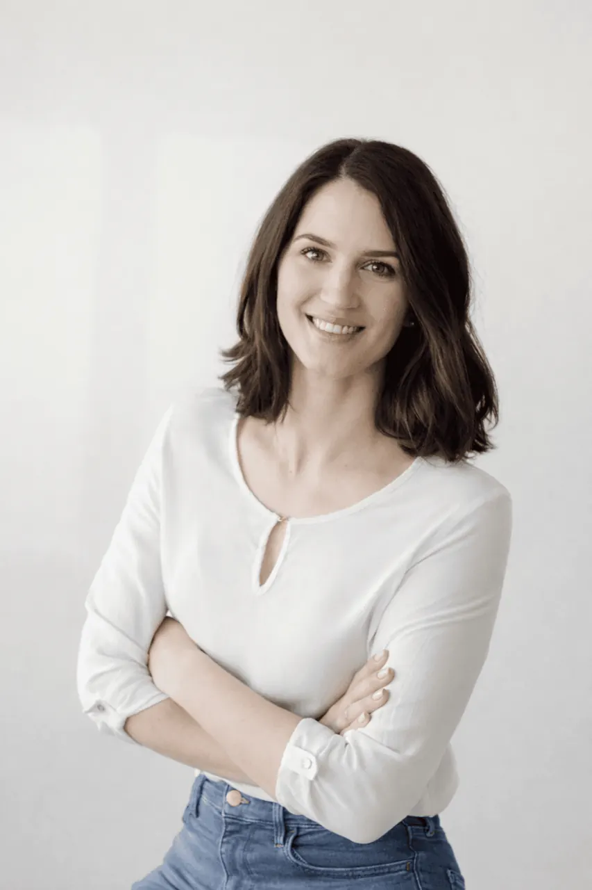

Lažje prepoznaš, kaj v tem obdobju res šteje, in kaj lahko za zdaj odložiš.
Coaching za ženske
Več jasnosti.
Več jasnosti.
Manj razpetosti.
Več tebe.
Materinstvo, kariera, partnerstvo, podjetništvo, vsakodnevne obveznosti. V določenih obdobjih se lahko zgodi, da postane vsega preveč. Ne zato, ker ne bi zmogla. Temveč zato, ker nosiš veliko odgovornosti in ob tem pogosto zmanjka prostora za razmislek o tem, kaj potrebuješ ti.
Coaching je prostor, kjer se za trenutek ustaviš. Prostor, kjer lahko razčlenjuješ svoje misli, odločitve in izzive brez pričakovanj, da moraš imeti vse odgovore.
Skupaj ustvariva prostor za več jasnosti, zaupanja vase in odločitve, ki so skladne s tabo.

Ko te kliče sprememba
Tukaj sem, da te podprem, ko ...
- usklajuješ materinstvo, kariero ali podjetništvo in se pogosto počutiš razpeto med različnimi vlogami
- se vračaš s porodniške in iščeš svoj način prehoda nazaj v delo
- si pred pomembno osebno ali karierno odločitvijo
- čutiš, da si se med vsemi odgovornostmi nekoliko izgubila
- želiš več zaupanja vase in manj notranjega dvoma
- si želiš prostor za iskren razmislek in podporo
Kaj lahko pričakuješ?
Prostor za jasnost, podporo in rast
Moj pristop
Coaching ni svetovanje in ni terapija. Je strukturiran, zaupen proces, kjer s pravimi vprašanji odpirava prostor za razmislek, ki ga v vsakdanu morda nimaš. V kombinaciji refleksije, usmerjenih vprašanj in konkretnih korakov bova raziskovali tisto, kar je trenutno najbolj pomembno zate.
Kako delujeva skupaj
Coaching proces izhaja iz tvoje izkušnje. Skozi pogovor ti pomagam slišati lasten glas, prepoznati notranje vzorce in postaviti korake, ki so smiselni zate. Vsako srečanje se prilagaja tvojemu ritmu in cilju - ni vnaprej določene poti.
Kaj ti coaching prinese
Spremembe, ki jih začutiš v vsakdanjem življenju
Bolj verjameš svojim odločitvam in ne potrebuješ zunanje potrditve, da si v redu.
Veš, kam usmerjati svojo energijo in kateri koraki te vodijo naprej.
Lažje rečeš ne, kar ti ne služi, in da, kar ti je pomembno.
Ob izzivih ohraniš stik s sabo in odločitve sprejemaš iz mirnejšega prostora.
V coachingu imaš zaupen prostor, kjer lahko misliš na glas in si slišana.
Ne zato, ker bi te kdorkoli rešil. Ampak zato, ker se končno daš slišati v skladu s sabo.
Individualni coaching
- 60-minutna srečanja
- Online ali v živo
- Prilagojeno tvojemu ritmu in cilju
Rezerviraj uvodni pogovor
Na brezplačnem spoznavnem klicu bova raziskali, kaj te trenutno najbolj zaposluje, kakšno podporo iščeš in ali je coaching prava izbira zate.
Rezerviraj uvodno srečanje →